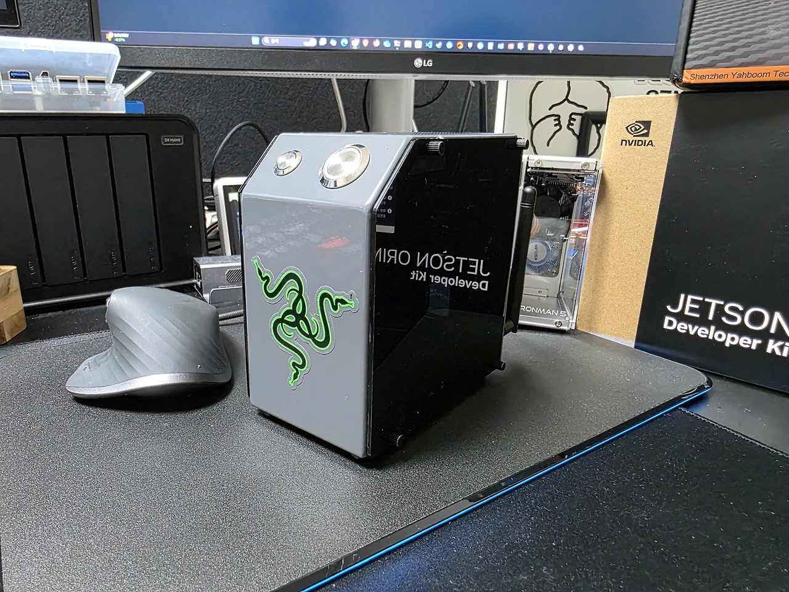

tl;dr
아직까진 코딩에 있어서 Domain Knowledge와 경험은 필요하더라..
서두
취미로 하드웨어 장비같은 걸 사다가 구석에 짱박아 놓는 걸 즐기고 있다. 그러다 생각이 나면 꺼내서 조립하고 이것저것 돌려보다가 딴 짓하다가, 또 깊게 파고.. 이런 일련의 과정을 거치고 있다. 사실 깊게 판다의 의미는 내가 뭔가를 시도해봤는데 안되는 부분을 검색을 통해서 찾는 과정이 대다수다. 이전에야 검색창을 통해서 열심히 남들이 써놓은 글을 읽고 응용해보면서 해결하는데 시간을 많이 썼었는데, ChatGPT나 Gemini같은 GenAI를 써보면서부터 그런 검색시간이 많이 단축되고, 생각보다 만들어진 output도 괜찮다. 그런 마음에서 또 복잡한 일을 시키면 버벅거리고… 그 경험담에 대해서 좀 공유해보려고 한다.
GenAI를 사용해서 유용했던 케이스


하드웨어를 다루는 것 중 최근 해봤던 경험은 아마존에서 구입한 CUBE NANO에 새로 구입한 Jetson Orin Nano Super Devkit을 장착하는 것이었다. 판매자 설명창을 보면 해당 케이스는 구형인 TX2 NX부터 최신 모델인 Orin NX까지 장착이 가능하다고 되어 있다. 다른 케이스들에 비해 이 케이스가 가지는 장점은 LED strip와 소형이긴 하지만 fan cooler, wifi 안테나가 제공되고, 또한 현재 보드의 cpu usage나 network bandwidth등을 확인할 수 있는 oled 창이 제공된다는 점이다. (사실 Jetson board를 사용하는데 있어 아무런 성능 향상점은 없지만) 외관상의 장점 하나로 조립까지 했다. 그런데 문제는 가이드에 있는대로 필요한 드라이버랑 SW패키지까지 설치했는데, LED가 동작하지 않는 것이다. 막상 검색해봐도 나처럼 Jetson Orin에다가 이 케이스를 붙였던 케이스는 없었던 것 같다. 제조사 페이지에 Q&A를 남겨도 답변이 없어서 좀 난감했는데… 이 부분을 ChatGPT가 해결해줬다.
ChatGPT의 문제 해결 과정
사용한 모델은 ChatGPT-o3였는데, 해당 모델은 결론 도출에 필요한 사고 과정을 눈으로 확인할 수 있었다. 그런데 실제로 생각하는 과정을 보면 정말 해당 분야의 지식을 가진 사람처럼 사고하는게 느껴졌다. 우선 내가 던진 프롬프트는
- Prompt : 내가 CUBE NANO라는 케이스를 사용하고 있고, 여기에 Jetson Orin Nano Super를 부착해서 사용하려고 해. 그런데 케이스에 달린 OLED가 동작하지 않아. (케이스의 사양과 SW 패키지의 소스 공유)
- Reasoning 1: CUBE NANO의 사양에 대해서 검색 -> 검색을 통해서 OLED가 adafruit에서 만든 SD1306이라는 것을 확인함
- Reasoning 2: SD1306의 사양을 확인한후, 해당 OLED가 I2C로 동작하는 것을 확인함. 더불어 jetson orin nano의 board schemetic을 확인한 후 I2C 통신에 필요한 핀(MOSI, MISO, SCK)의 위치를 확인함
- Output: OLED와 Board간의 결선을 확인한 후, 정상 인식 여부를 확인하기 위해
i2cdetect라는 명령으로 인식 여부 확인 필요. 이를 위한 간단한 test application 제공.
참고로 i2cdetect란 i2c bus를 통해서 통신하는 기기들의 상태를 확인할 수 있는 linux의 user program이다.
덕분에 I2C는 잘 붙어있는 것을 확인했는데, 이상하게 1번 bus로 연결되어 있는 가이드와는 다르게 I2C 7번 bus에 붙어있었다. 그리고 제조사에서 제공한 SW에도 보니까 I2C가 1번으로 하드코딩이 되어있는것까지 확인하고 수정할 수 있었다. 덕분에 지금은 OLED를 통해서 jetson이 얼마나 열심히 일하고 있는지 확인할 수 있다.
느낀점 1
이전에 ChatGPT랑 kicad를 활용해서 회로설계에 전혀 지식이 없던 사람도 보드를 만들었다는 사례를 들었는데, 이번 것도 하드웨어 특성에 관련된 내용도 도움을 받았던 점이 인상깊었다. 물론 개인적으로 I2C에 대한 기초지식이 조금 있었기에 수월하게 확인할 수 있긴 했지만, GPT가 알려준 답변만으로도 전혀 모르는 사람도 해결할 수 있을만큼 진짜 디테일한 답변을 해줬다. 이때부터 검색으로도 답변을 찾기 어려운 문제같은 건 도움을 많이 받기 시작했다.
GenAI에 대한 환상이 깨졌던 케이스
케이스 1
회사에서도 모델 학습 관련 일을 하다보니 모델을 학습시킬 환경을 구현해야 될 필요가 있어, 도움을 종종 받았다. 특히 최근에 출시된 Gemini Code Assist에서 제공하는 Agent mode는 Preview이긴 하지만, 진짜 동작하는 모습을 보면 자기가 알아서 코드도 만들고, 디버깅도 해준다. (물론 권한 문제때문에 디버깅은 제한되기는 하지만…) 특히 아직은 pdf같은 문서 context를 넣지는 못하지만 논문에 나와있는 알고리즘을 전달하면, 나름 그 알고리즘에 맞게 구현도 해준다. 그런데 아직 Preview라서 그런가 자기 스스로 자가발전(?)하는 케이스들이 종종 발생한다.

그중 대표적인 케이스가 이거였다. 뭔가 열심히 일하고 있는것 같아서 놔두고 있었는데, 자세히 하는 일을 보니 표현은 코드 구현을 했다고 했는데 실제로 구현되지 않고 가만히 있는다던가, 아니면 기존에 구현되어 있는 내용을 수정했다가 다시 다음 response에서 해당 내용을 살리는 행동을 반복하기도 한다. 이것때문인지는 모르겠지만 몇번 반복하고 나면, Quota가 다 소모됬다는 메세지가 뜬다. 결과적으로 어떤 구현체의 틀을 잡아주는 것까지는 Gemini가 열심히 해줬지만, 최종 산출물을 검토하고 재구현하는 부분은 어쩔수 없이 사람이 해야되는 부분인가 싶었다.(+ 실제 환경에서의 실험도 내가 해야지…)
케이스 2
사실 이번에 이렇게 quarto를 사용해서 블로그를 만들때도 ChatGPT와 Gemini가 나름 열심히 해주긴 했지만, 결과적으로 돌이켜보면 일에 대한 지연만 발생했다. 애초에 내가 Quarto를 통해서 구현하고자 했던 내용은 다음과 같다.
- 내 개인 연구용 포트폴리오 구축
- 한/영 토글을 통한 이중 언어 처리
- 각 포스트별 pdf/jupyter로의 출력 기능
원래는 quarto가 v1.5가 넘어가면서부터 multi-profile 기능을 제공하기 시작했고, 해당 기능을 활용하면 두번째 요구사항을 만족할 수 있을거라 생각했는데, 개인적으로 yaml 문법이나 quarto에서 rendering하는 원리에 대해서 이해가 부족해 구현하지 못했었다. 이 부분은 ChatGPT나 Gemini도 마찬가지였다. 뭔가 python으로 어떤 것을 구현하라고 하면 잘 하던것을 오류가 안나게 yaml 파일을 정리해달라고 해도, 문법에 안 맞는 결과만 보여주었다. 개인적으로 탐색하면서 babelquarto라는 multi-language rendering을 지원해주는 R 패키지를 찾아서 이를 활용한 구현 도움을 받으려고 했는데, 역시 이 부분도 해소가 안되었다. 또 github action을 수행하면서, 이상하게 layout이 깨지며 발생한 warning을 전달하기 위해서 workflow파일과 log를 전달해도, 권한때문인지 인지를 못하는 경우가 많이 발생했다. 심지어 ChatGPT는 들여쓰기로 문법을 인식하는 yaml파일이 정상적으로 올라가 있음에도, 한줄로 출력되어 레이아웃이 깨진다는 답변을 해줘서, 스크린샷까지 공유해서 답변을 교정받기까지 했다.
느낀점 2
최근 사례는 ChatGPT나 Copilot, Claude 등을 사용해서 Vibe Coding을 하면, 코딩을 잘 모르는 사람도 쉽게 원하는 것을 구현할 수 있다는 사례를 많이 제시하고 있다. 그런데 개인적인 경험으로는 특이한 케이스에 대한 코딩이 필요한다던가, 혹은 접근 권한이 있어야만 확인할 수 있는 케이스에 대해서는 역시 아직까진 사람이 해야될 부분이 있구나 싶었다. (덕분에 직접 찾아보면서 yaml의 상속 구조나 R 문법에 대해서 좀 공부할 수 있었다..)
결론
아무리 GenAI로 코드를 구현해주고, 확실히 예전보다는 코드를 구현하는게 쉬워지긴 했지만, 그렇다고 산출물에 대해서 맹신하기도 어렵고, 아직까지는 관련한 사람이 같이 봐주고 수정할 수 있는 역량이 있어야하지 않을까 하는 생각을 해본다. 그리고 무엇보다 접근권한 문제때문에 모델이 문제 확인을 제대로 못하는 케이스를 보면서 적어도 모델이 사람이 원하는대로 수정해주려면, 적어도 컴퓨터 화면을 보는 눈이나 I/O를 제어할 수 있는 로봇팔(?) 하나는 있어야 하지 않을까 싶다. 그래서 왠지 HuggingFace가 lerobot이나 Reachy Mini 같은걸로 그 한계를 극복하려는건 아닐까 생각이 든다. 나도 이런거 사서 좀 해보고 싶지만, 일단은 집에 있는 로봇개 같은 걸로 시도해보고자 한다.